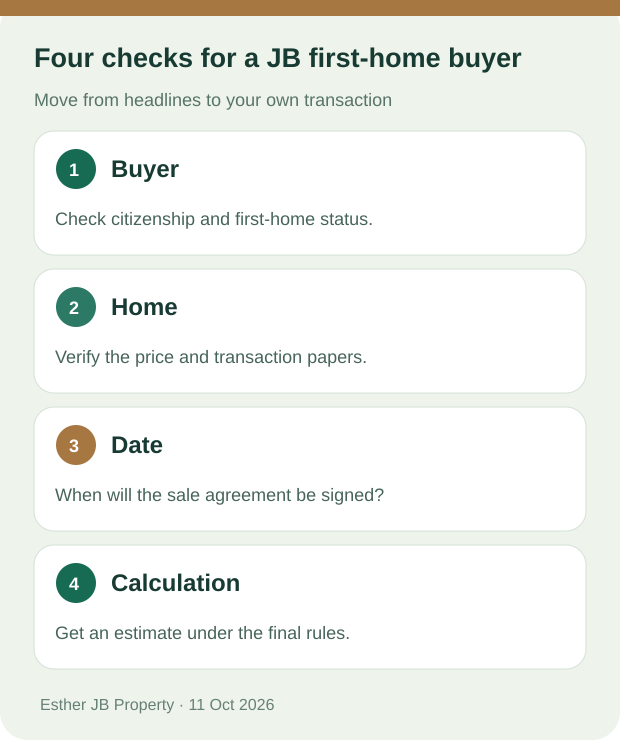

Johor Bahru buyer guide · Sources checked: 11 October 2026
Budget 2027 First-Home Stamp Duty: Five Questions for JB Buyers
The essential distinction: Malaysia already has a full stamp duty exemption for qualifying Malaysian citizens buying a first residential home priced up to RM500,000. Budget 2027 proposes continuing it and adding a tiered exemption for qualifying first homes priced up to RM750,000. Your eligibility depends on the final rules and transaction documents. Ministry of Finance, Budget 2027 Tax Measures, Appendix 16

Original checklist graphic. It is not a stamp duty quotation for a particular transaction.
1. If I buy a qualifying first home under RM500,000 in 2026, must I wait?
Not simply because of this announcement. The current full exemption covers the relevant loan agreements and transfer instruments for qualifying Malaysian citizens buying a first residential home priced up to RM500,000. The Ministry of Finance lists sale and purchase agreements executed between 1 January 2021 and 31 December 2027. Have a professional check your particular documents before signing. Budget 2027 Tax Measures, Appendix 16
2. Does the new RM500,000–RM750,000 proposal apply already?
Do not treat it as an exemption already granted to your purchase. Budget 2027 proposes a full exemption on the first RM500,000 and a 50% exemption on the portion above RM500,000 up to RM750,000 for qualifying first homes. The proposed agreement-date window is 1 January 2027 to 31 December 2030. Check the final implementing rules and the instruments involved before calculating a saving. Budget 2027 Tax Measures, Appendix 16
3. Is a RM750,000 home entirely free of stamp duty?
That is not what the proposal says. It sets out two tiers of exemption; it does not say the whole purchase price or every buying expense disappears. The 50% applies to the specified portion of the proposed stamp duty treatment, not a 50% discount on the home price. Get an individual calculation based on the final rules. Budget 2027 Tax Measures, Appendix 16
4. Does the RM20 billion SJKP guarantee mean my mortgage will be approved?
No. The Budget speech describes up to RM20 billion in Housing Credit Guarantee Scheme guarantees to support first-time buyers, particularly self-employed applicants without fixed incomes. It is a programme amount, not an individual entitlement, an approval or a promise of zero deposit. Ask a participating institution about your circumstances. Prime Minister's Budget 2027 speech, paragraph 55
5. What should I do first if I am viewing condos or landed homes in JB?
Set a total budget, then check first-home eligibility, the verified home price and the likely agreement date. Compare the actual home, daily travel and ongoing costs. A possible reduction in part of the transaction costs cannot tell you which property fits your life.
If you want help organising the next questions, tell Esther your budget range, preferred JB area and buying timeframe. You choose whether to send the WhatsApp message.
WhatsApp button: Ask what to check for my first home
Ask Esther
Related reading: Full JB first-home Budget 2027 guide · Meet Esther
Sources and review date
- Malaysia Ministry of Finance, Budget 2027 Tax Measures, Appendix 16
- Prime Minister's Budget 2027 speech, paragraphs 55–56
Checked on 11 October 2026. Final eligibility, implementation and financing terms must be verified for each transaction.